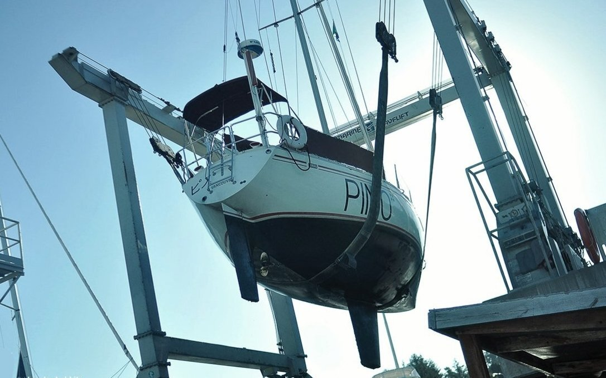

costs
maintenance_cost
Doing maintenance and repairs yourself will bring the cost down. Offloading work to professionals if you can afford it is fine, but it's good to know how to take care of your boat. You may not always have access to workers if sailing to far-flung islands.
A failure to maintain items regularly will cost more later. We recommend keeping a log of the repairs, part replacements that is done to your boat. Many parts have a limited lifespan, so knowing when they were replaced last will help prevent breakages. If leaving for a big sailing trip with spares, install the spare and keep the other one as the spare. If you do this, you'll learn how to change the part and what tools you need to do the job.
Maintenance checklist:
- Engine (see engine care for detailed list)
- The boat’s hull (bottom) & topsides
- Electrical systems
- Plumbing
- Moving parts (hinges, tracks and zippers)
- Canvas and upholstery
When doing repairs, use quality materials and products, research them thoroughly before a project instead of relying on brand names.
Some years will cost more than others as gear wears out.
Hauling-out costs
Tasks like hauling-out (to get the bottom painted) is once every 2-3 years for an offshore boat, but can be every year otherwise. How often you haul out depends on your personal preference.
Yard fees vary from place to place, those closer to large cities will cost more. In New Zealand, it cost us NZD$420 total, including bottom rinse, haul in and out and days to stay on the hard. The most expensive part of a haul out is the travel lift. While in Japan, it was about double that price for half the time, mostly because the travel lift doubles as hard stands, and so only one boat can ever be lifted for bottom work (this was in Minamiise).
When out of the water, don't forget to...
- Check your cutlass bearing (push up on the prop to see if there is any play, there shouldn't be).
- Grease the inside of your prop(if you have a Max Prop).
- Replace the boat zincs (shaft, hull(if any)).
- Replace or service your shaft seal. Dripless types need to be replaced out of the water, because it is necessary to undo the engine coupling to pull back the shaft to remove, and insert a new bellow.
- Check the hull for blisters.
Paint
Bottom paint: If we want to wait longer between haul-outs we paint more coats (2-3), otherwise 1 every year. We use ablative anti-fouling which costs about ~$250 to paint a 10 m yacht. Ablative wears out over time and when it does it will become less effective at repelling sea critters. Eventually, stripping the bottom of all paint down to the gelcoat is necessary, paint can build up and the older layers will start to flake off, making it difficult for new paint to adhere to the bottom. If painting the bottom from gel coat, adding a layer of primer is necessary so that the antifouling paint can adhere.
Strut and prop: Coating your prop ,and strut with PropSpeed (see image below) works well to keep growth off, it works well in high-growth areas (we used it in New Zealand and Japan) but it is very expensive. Sailors often buy the product to share with others (helps keep costs down). There are also zinc-based sprays, or paint, that work quite well.
If your boat comes out of the water for a haul-out every year, a cheap alternative is to coat metal with zinc cream(penanten) or anhydrous lanolin (reported by others). Both products are available at the pharmacy. In June 2021 we tried zinc cream, we'll report back on our findings.
June 2023 update: two summers later, the zinc cream was all gone, but there wasn't too much growth on the strut. We re-applied zinc cream on the prop.

Offshore sailing costs
Traveling offshore means more wear because the boat is under more stress. Repair and maintenance can cost between $500-800 per year for a 10 m yacht like ours. This price goes up and down depending on where we go, and what has to be replaced that year. The size of the boat has a big influence on the cost of things. Larger boats need thicker, stronger hardware, rigging etc.
In 2018 while in new zealand, we spent around $10k on Pino (see projects and pain) to get it ready for japan and the subsequent trip across the north pacific ocean. This was the most we'd spent in a year and was due to the purchase of a new ais system, mainsail, throttle cables, window replacement, saloon hatch, galley plumbing, replacement batteries and solar panels. We did most of the work ourselves, all except for the mainsail. Our first year was also expensive, because the boat was not outfitted for sailing offshore, we had to buy life jackets, jacklines, a drogue, extra lines, shackles, a medical kit, extra tools, a location device, a handheld VHF, a PLB, a satellite phone, foul-weather gear, engine spares etc. We wrote an offshore checklist to find out what you may need to buy.
Engine maintenance costs
Engines require spare parts like oil ($25) and fuel filters ($10, more for primary filters), they should be replaced 250 hours (300 hours on some models) or once per year, whichever is sooner. Water pump impellers ($40), water pump and alternator belt (15-$20), zincs (inside engine, $8 each), coolant (if fresh water cooled) shaft zinc ($16 each) etc. Buying the official part for the engine will always cost more. Depending on the item, finding an equivalent from another maker is tricky. For an alternator belt, measure the outer an inner diameter, the width at the top and at the base and visit an automotive store.
See engine care for detailed notes on how to maintain a diesel engine, what spares too carry and how to troubleshoot problems.
Wood upkeep costs
Most boats have teak rails or accessories, or marine plywood(interior). Teak does not rot, but it is a very expensive and an increasingly rare material. We don't recommend buying new exotic hardwoods, even if they last longer, because they often come from endangered forests. In all cases, using reclaimed hardwoods is the best thing to do. When boats are too old, they're stripped for parts and are a good source of used hard woods.
Most interior wood ought to be treated—especially marine plywood—so they don't absorb moisture. Marine ply is usually pre-treated to prevent the wood from rot and decay, but the wood still needs to be sealed. All boats suffer leaks eventually, and so it is necessary to take steps to protect the wood to make it last. If replacing a wall, coat the wood with multiple layers of epoxy(on the seam too) before applying multiple coats of varnish for UV protection. For outside wood, apply at least 8 coats of varnish to make sure that it lasts. Add more coats after a few hours, while it hasn't dried, that way you don't have to sand it to get the new coat to adhere (this means having to do many coats very fast though).

A liter of resin can cost 30-40$, and harder is about 50-74$ per liter(although sizes tend to be much smaller. UV-resistant varnish can cost 40-80$ per liter, depending on the producer.
moorage
Living at anchor, that is, in a bay somewhere tethered to the earth with ground tackle is free. Some bays will have moorings installed that you can tie to for a small fee (often around $10-15 per day). Living at anchor is the cheap way to go, although getting a good anchor and rode is important as it will keep your boat safe.

Marinas often have guest docks with power, WiFi and showers, for a medium-to-high cost ($300-$800.) The longer the boat though, the bigger the cost. Some marinas charge per dock space rather than boat size, beware of these places. Moorage near cities is more expensive, and the price goes up during the high season (summer). Winter moorage is generally much cheaper.
Paying for annual moorage is a good idea, but keeping a boat in a marina means getting liability insurance, which in turn, means you'll need a survey, resulting in a seemingly interminable domino effect which can incur many more costs. Depending on the age of your boat, and when it was last surveyed (if ever), you may need a full condition out-of-water survey. This means paying a marina to lift your boat out, and paying the surveyor. A surveyor will point out mandatory items that need fixing and/or replacing, if these items are not complied with within 60 days the insurance will be void.
Living aboard your boat will cause wear from regular use of the space. If staying at a marina in your home country for long periods, paying for liveaboard fees (up to $150 extra per month) is necessary. If staying in a marina in a foreign country, liveaboard fees are often waived. Some marinas charge for electricity and water, be sure to take that into account, especially if you have plans to winter there and that your heating is electric. In winter, marinas charge less than in the high season. A marina that charges 900$ per month in the summer can charge 500$ in the winter.
safety_gear

They who let the sea lull them into a sense of security is in very grave danger. — Hammond Ines
Things can happen, even on a calm ocean, so it is necessary to be alert and to not underestimate the water's strength and unpredictability. Never be complacent, and don't trust the sea.
Safety gear with auto-inflating systems need to be inspected often, and you must carry spares. Safety gear will last you many years if serviced regularly.
Pyrotechnic signaling devices (including aerial flares and hand held signals) expire 42 months after the date of manufacture in accordance with the Coast Guard requirements. Typically, this means that you must replace your flares every three boating seasons. Aerial flares cost $75 per pack of 6 (in Canada), for a boat our size (10 m) we need to have 12 aboard.
Life jackets. Wear a life jacket (with a sailing harness) and tether (especially when night sailing). The jackets need to be serviced every 3 years, so that the auto-inflating canisters can be tested, and replaced. Replacement cartridges for auto-inflating PFDs cost about $35 CAD. If planning to travel for many years out of the country, carry replacement cartridges onboard, because other countries may not carry the ones required by your model and that replacements can't be shipped by air since they're pressurized.
Life jackets that are not auto-inflating are fine, but must have a sailing harness to which you can clip a short tether. If the tether is short enough, you won't fall overboard and won't require extra flotation. Floating life jackets that are non-inflating are bulky, and may make it difficult, or uncomfortable to sail in. Wearing a short tether that keeps you to the boat, and prevents you from falling too far overboard is your best security. We recommend a short tether with two clips, so you can clip to another point on the boat while always being clipped on elsewhere.
life rafts. Re-packing a liferaft is very expensive, and varies depending on the model, and your location in the world.
Jacklines. Run jacklines along the deck, from the bow to stern cleats, and keep them within the standing rigging. Make sure the jacklines are flat, and brightly colorful so as to be visible at night. Rope jacklines can trip you up. An even better option for jacklines, is to keep them running as close to the center of the boat as possible, so that there is no chance of falling overboard when attached. Jacklines have to be made from a strong, UV resistant material, you can buy them, but we had ours made.
first aid kit
Basic First-aid kit:
Clearly mark the first-aid kit with a red cross, and make sure everyone aboards knows where it is. Keep a list inside of the items you use, and be sure to top off the kit every year or so. Also, see ditch bag.
- Sterile gauze pads (dressings) in small and large squares to place over wounds
- Medical tape
- Roller and triangular bandages to hold dressings in place or to make an arm sling
- Adhesive bandages in assorted sizes
- Scissors
- Tweezers
- Safety pins
- Instant ice packs
- Disposable non-latex gloves(such as surgical or examination gloves)
- Flashlight(with extra batteries in a separate bag)
- Antiseptic wipes or soap
- Pencil (and sharpie) and pad
- Emergency blanket
- Eye patches
- Thermometer
- A first aid manual
Basic Medicine kit:
Always read about a medicine before using it. If administering medicine to another person, ask about their allergies, and past medical history, last oral intake etc. Some medicines can cause severe allergic reactions, or may interact with other medicine.
Never administer anything to anyone without their consent.
- Ibuprofen (Oral. Minor pain, and fever reducer, e.g., toothache, menstruation cramps, headache)
- Aspirin (Oral. Pain, fever, inflammation reducer, e.g., treat/prevent heart attacks, strokes, chest pain)
- Antihistamines (allergy relief)
- Seasickness meds (scopolamine patches, dimenhydrinate(dramamine) etc)
- Ear drops
- Eye wash
- Insect repellant (mosquitoes can carry malaria, or dengue)
- Hand sanitizer
- Topical anesthetic
- Zithromycin (Oral. Treatment of bacterial infections, e.g., traveler's diarrhea, gastrointestinal infections etc)
- Oxycodone/Acetaminophen (Oral. Severe pain relief, fever reducer)
- Sunscreen (SPF 30)
- Aloe vera gel with lidocaine (for burn relief)
- Bacitracin/Polysporin/Neosporine (Topical ointment. Prevents infection. For minor scrapes, cuts, and burns)
- Hydrogen peroxide
- Imodium (anti-diarrhea)
Advanced Medicine kit add-ons:
- Hot water bottle (for hypothermia)
- Staple gun (for wounds)
- Epinephrine (vials, or Allerject/AUVI-Q. Avoid EpiPens, they are grifters)
- Tourniquet
- Multitool
- Compression bandage
- Reinforced sterile skin closures
- CPR pocket mask
- Povidone surgical scrubs (iodine)
- Sterile sutures thread with needle
- Emergency dental kit
ditch bag

Every boat should have a ditch bag, that is, a bag filled with emergency supplies in case the boat needs to be abandoned. Remember though, you should only ever have to step UP into a liferaft. Don't be too quick to abandon your boat, boarding a liferaft ought to be a last resort. In a panic, sailors board their liferafts too soon, with their boat found later, still afloat.
The ditch bag should have:
- A handheld vhf
- Spare batteries
- Noise-producing device (whistle, horn)
- flashlight
- Water rations
- Dense, high calorie food rations
- Charts
- Multifunction Knife
- Multitool
- Sextant
- Sunscreen (SPF 30)
- Lighter & pack of water proof matches
- first aid kit
- Fish line & fish hooks
- Mirror
- Compass
- Duct tape
- Flare gun
- Emergency blanket
- Tarp, for sun protection & as vapor barrier for a hypothermia wrap(see medical).